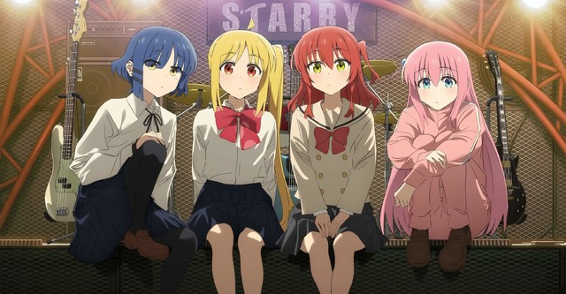

Műfajok:
Akció, Fantasy
Leírás:
A történet középpontjában egy titokzatos gonosztevő, a Fehér Nyúl elleni harc áll, miközben Dante megpróbálja megvédeni mind az emberi, mind a démoni világot. A sorozat látványos animációval és intenzív harcjelenetekkel érkezik, így a játék rajongói mellett az akció kedvelőinek is izgalmas élményt nyújt.